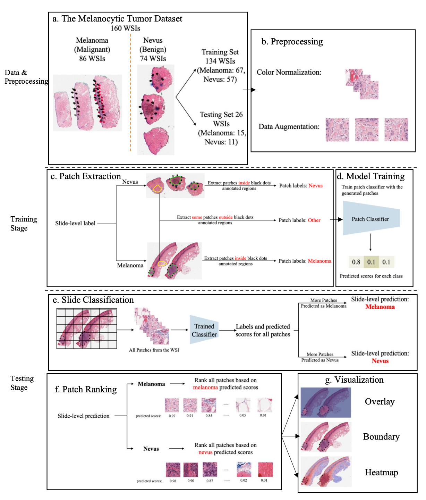
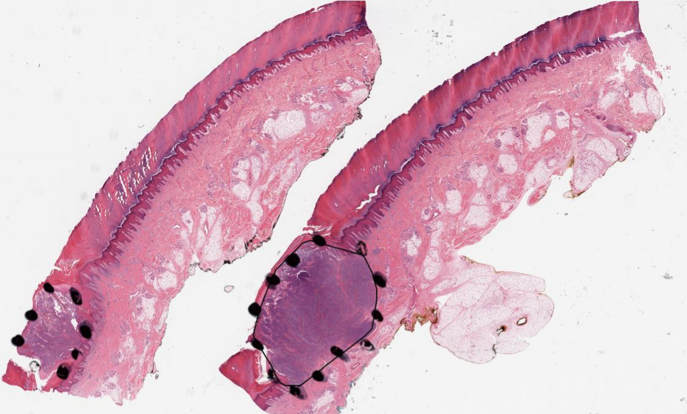
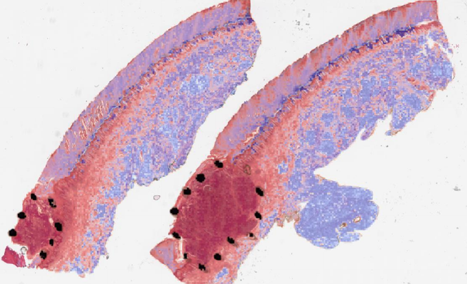
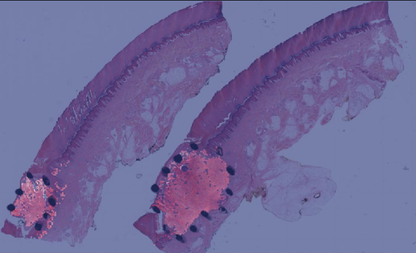
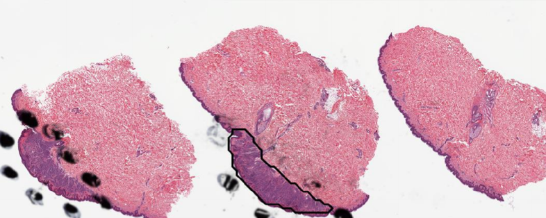
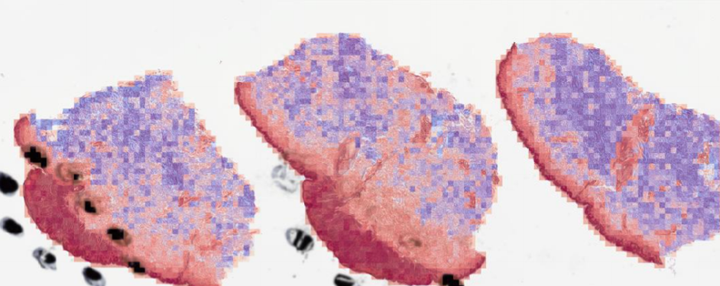
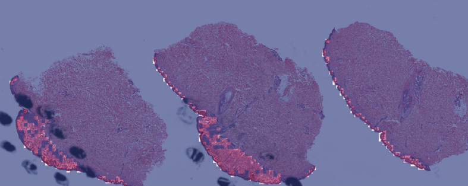

Computational pathology · Whole slide images · ROI detection
Region of Interest Detection in Melanocytic Skin Tumor Whole Slide Images
PCLA-3C is a patch-based deep learning framework that classifies melanoma versus nevus slides and localizes the diagnostically relevant region using partial pathologist annotations plus an explicit background class.
The work
One model produces the slide label and the ROI map.
The paper reframes melanocytic tumor ROI detection as 3-class patch classification. A VGG16 model learns Melanoma, Nevus, and Other patches, then uses patch votes for slide diagnosis and winning-class scores to rank patches into a predicted ROI.
Method
Partial annotations become a practical training signal.
The central idea is to avoid requiring exhaustive pixel labels. Annotated tumor regions provide positive examples, manually curated background regions provide clean Other examples, and patch-level scores supply both classification and localization.
-
1
Tile each WSI
Whole slide images are split into non-overlapping 256 x 256 patches at 20x magnification.
-
2
Train PCLA-3C
VGG16 is fine-tuned as a 3-class patch classifier over Melanoma, Nevus, and Other.
-
3
Vote and rank
Patch votes determine the slide label; winning-class scores rank patches into the predicted ROI.
-
4
Evaluate overlap
Intersection over Union compares the predicted ROI with pathologist annotations on the held-out test set.

Results
PCLA-3C improves both classification and localization over CLAM.
Both approaches were evaluated on the same held-out test split. PCLA-3C uses partial ROI annotations during training; CLAM is the weakly supervised baseline.
| Evaluation metric | PCLA-3C | CLAM baseline | Interpretation |
|---|---|---|---|
| Patch classification accuracy | 0.892 | Not applicable | CLAM does not assign patch classes; PCLA-3C exposes patch-level evidence. |
| Slide classification accuracy | 0.923 | 0.692 | Majority vote over tumor-class patches produces the slide diagnosis. |
| ROI Intersection over Union | 0.382 | 0.112 | Patch scores localize the diagnostic region substantially better than the baseline. |
Visual evidence
Boundary, heatmap, and overlay views make the model inspectable.
The repository includes visual examples for melanoma and nevus slides. These are the project page examples from the released codebase.






Paper to code
The implementation is organized as a five-stage pipeline.
The detailed explainer maps paper concepts to source files, function names, outputs, and implementation caveats. The public page keeps the pipeline easy to scan.
extract_patches_3class.py
Build patch datasets from WSI bags and XML annotations.
method_pcla_3class.py
Train the VGG16 3-class patch classifier.
score_pcla_3class.py
Score patches and classify each slide by majority vote.
visual.py
Create overlay, boundary, and heatmap visualizations.
analysis.py
Compute ROI IoU from visualization counts.
Explore
Read the paper, inspect the code, or open the full explainer.
The explainer files added to this repository are preserved as the technical reference for the GitHub Pages site.
Clinical framing: this model is decision support, not autonomous diagnosis. The work is valuable because it exposes where the model sees diagnostically relevant tissue while preserving pathologist review.